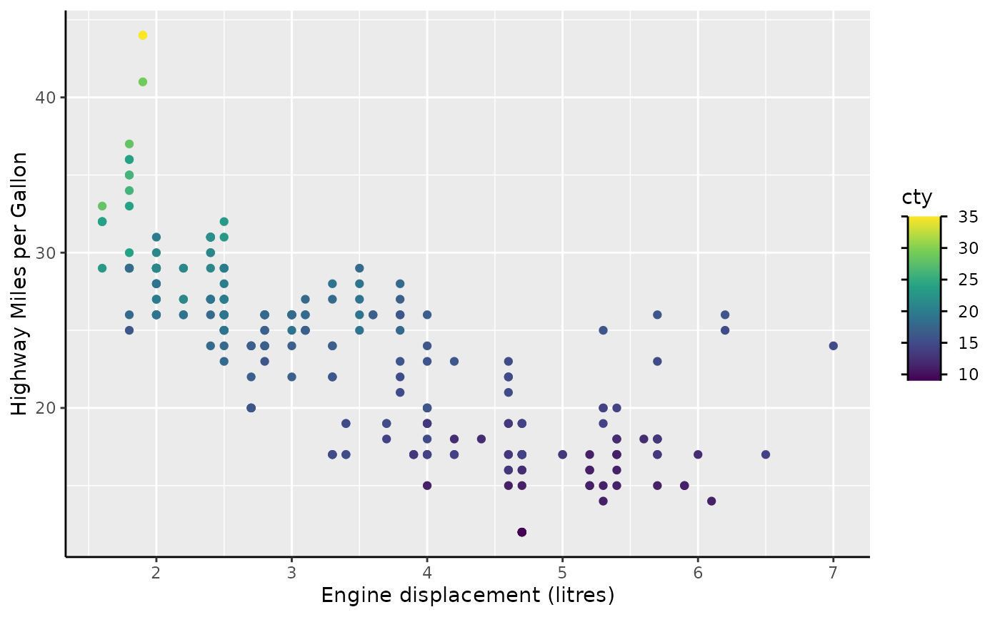
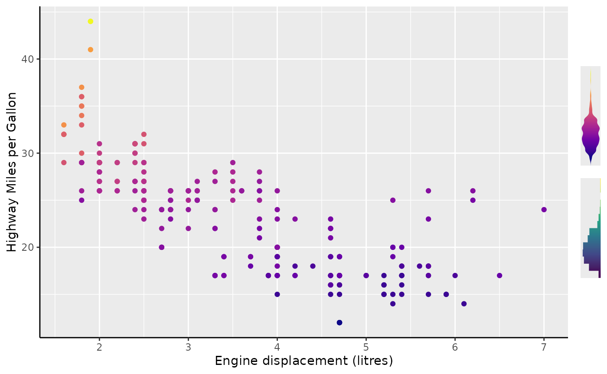
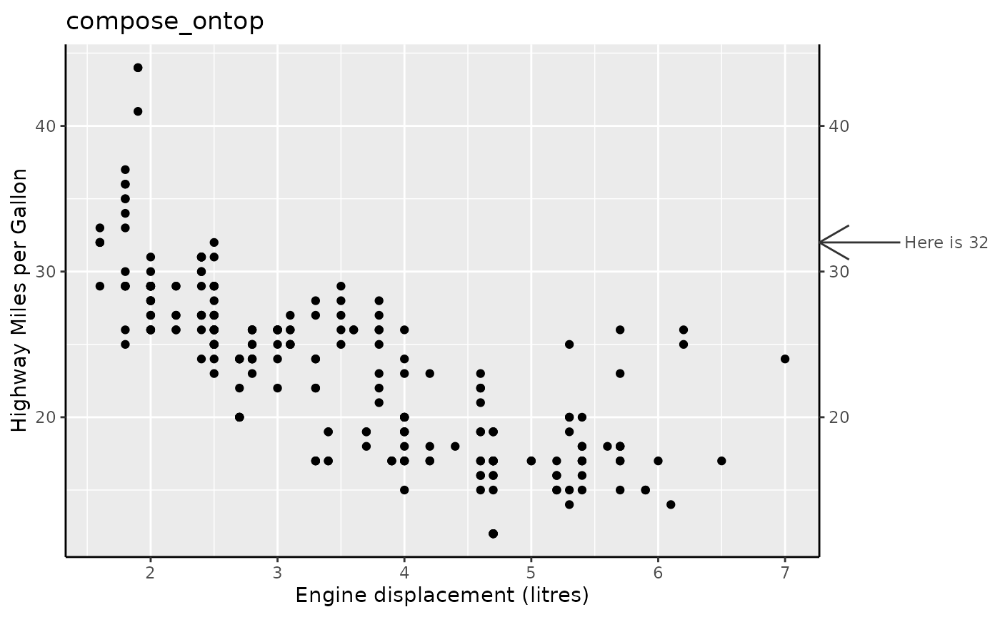
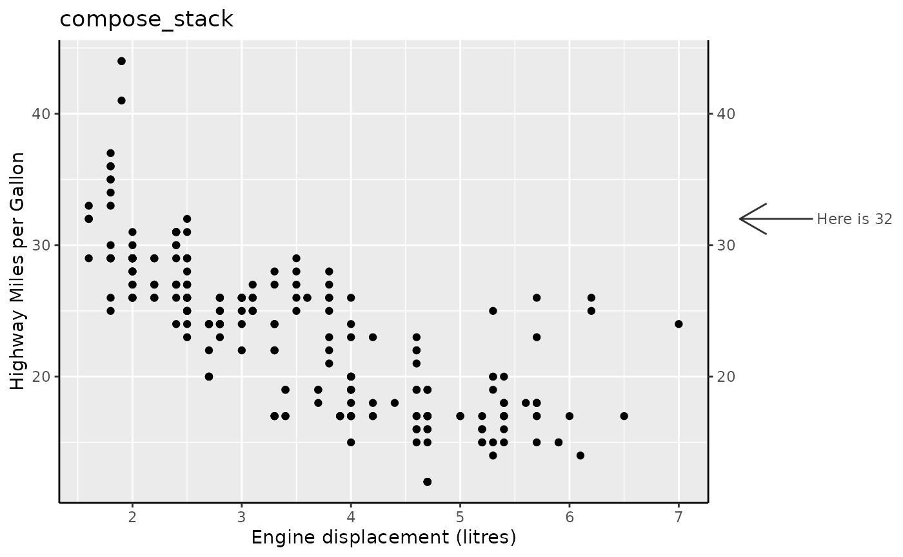

The expert’s eye may have noticed that not all exported functionality are full blown guides or key constructors. Besides aforementioned important components, let’s talk a bit about the innards of guides.
Stacking
When we cut open a guide and examine its innards spilling out, our
eyes first meets the skeleton that holds the guide together. This
skeleton is the composition guide: a guide whose task it is to render
and compose other guides. The composition guide may not be entirely
foreign to a ggplot2-user. This is because vanilla ggplot2 also contains
a composition guide, namely guide_axis_stack(). It accepts
as it input some guide specifications and stacks the guides on top of
one another.
standard <- ggplot(mpg, aes(displ, hwy)) +
geom_point() +
labs(
x = "Engine displacement (litres)",
y = "Highway Miles per Gallon"
) +
theme(axis.line = element_line())
standard + guides(x = guide_axis_stack("axis", "axis", "axis"))
In legendry, we have the same composition operation:
compose_stack(). For your regular axis guides for the
x and y aesthetics, it works the same way as
guide_axis_stack(). However, if the guides it stacks
supports other aesthetics, like colour, it can also be used
there.
staxis <- compose_stack("axis_base", "axis_base", "axis_base")
standard +
aes(colour = cty) +
guides(
x = staxis,
colour = guide_colbar(first_guide = staxis, second_guide = "none")
) +
theme(legend.axis.line = element_line())Primitives
At this point, it might be wise to take a closer look at exactly what
guide_axis_base() is doing. Once we pull on the threads on
what its class is, the mystery starts to unravel:
class(guide_axis_base())
#> [1] "ComposeStack" "Compose" "Guide" "ggproto" "gg"Indeed, by using
compose_stack("axis_base", "axis_base", ...) we have been
stacking a stack! So when we peel back the layers and see what is inside
guide_axis_base(), will we find more stacks? No: all good
things must come to an end and so too must guides have their building
blocks.
If the composition is the skeleton then these building blocks are the
flesh providing function. These building blocks are called ‘primitives’
in legendry. For example, the guide_axis_base() function is
a stack of three primitives. They respectively build the axis line, the
ticks and the labels. In the complete guide, they don’t have any spacing
between them, but let’s exaggerate the spacing for clarity.
standard +
guides(x = compose_stack(
primitive_line(),
primitive_ticks(),
primitive_labels(),
theme = theme_guide(spacing = unit(5, "pt"))
))
Introducing the rest of the family
We’ve already met the more ‘famous’ primitives (lines, ticks, labels), so let’s round out our acquaintances. There is a spacer primitive that you can use to increase the spacing between the different pancakes in the stack, as it were. Then there is also the ‘ranged’ triplet: brackets, boxes and fences. These require a more niche range key and power the display of nested axes.
range_key <- key_range_manual(
start = c(2, 4), end = c(5, 6),
name = c("First", "Second")
)
standard + guides(x = compose_stack(
"axis_base",
primitive_bracket(range_key, "curvy"),
primitive_spacer(unit(0.5, "cm")),
primitive_box(range_key),
primitive_spacer(unit(0.5, "cm")),
primitive_fence(range_key, rail = "outer")
))The last member of the family is primitive_title().
Aside from just displaying text, it does three things:
- If we have >1 title, it will distribute the titles along the range. This makes it more convenient to label the lower and higher ends of a scale.
- It ‘absorbs’ the regular axis title by turning it off. Because the title primitive is a guide and not the actual title, this makes it slightly easier to prevent unwanted double titles.
standard + scale_x_continuous(guide = compose_stack(
primitive_title(c(
"Sneaky little displacementses",
"We needs it. Must have the displament")
),
primitive_title("Gollum explains engine displacement to you")
)) + labs(x = "A normal person explains engine displacement")- As it is implemented as a guide, it cannot take the place of regular axis titles. This also means that the titles will repeat over facets.
last_plot() +
facet_grid(~ year)Don’t use primitives directly
By giving them the primitive_-prefix, we have made it
impossible to use them by name inside function that don’t expect them.
This acts as a little bit of discouragement from using primitives as
complete guides.
standard +
guides(x.sec = "ticks")
#> Error in `validate_guide()`:
#> ! Unknown guide: ticksHowever, you can use primitives by name inside guide composition functions, or use their full constructor function.
standard +
guides(x.sec = compose_stack("ticks"))
# Looks identical to the above
standard +
guides(x.sec = primitive_ticks())
Sandwiching
Aside from making a stack of primitives, we can also build a sandwich of primitives. Analogous to two pieces of bread on the outside with the good bits on the inside, a sandwich composition of guides often sees a centrepiece flanked by two other guides.
Similar to how we naively believed guide_axis_stack() to
be its own little snowflake of a guide, so too is
guide_colbar() in fact a composition:
class(guide_colbar())
#> [1] "ComposeSandwich" "Compose" "Guide" "ggproto"
#> [5] "gg"Focussing on the ‘bread’ part first, there are two guides we can use for flanking the innards. One is called ‘text’ and the other one is called ‘opposite’.
standard +
aes(colour = cty) +
scale_colour_viridis_c(
guide = compose_sandwich(
text = primitive_labels(),
opposite = primitive_ticks()
)
)They are called ‘text’ and ‘opposite’ because the ‘text’-guide will
take on the position indicated by the legend.text.position
theme element. Perhaps unsurprisingly; the guide at the other end is
called the ‘opposite’ guide. You can expose this by swapping the theme
element.

It should also be noted that if the guide has a label-supression
mechanism, the ‘opposite’ guide will be drawn with surpressed labels.
The mechanism is in place in guides like
guide_axis()/guide_axis_base() for display in
for example facet_grid(axis.labels = "margins").
standard +
aes(colour = cty) +
scale_colour_viridis_c(
guide = compose_sandwich(
text = "axis_base",
opposite = "axis_base"
)
)
# The same plot
standard +
aes(colour = cty) +
scale_colour_viridis_c(
guide = guide_colbar(vanilla = FALSE)
)
The only thing that guide_colbar() does, that
compose_sandwich() does not, is to adjust the theme
settings to match ggplot2::guide_colourbar() more
closely.
Alright, fine, I get the ‘bread’ part of the sandwich! What about the inside? I’m glad you asked.
Gizmos
The insides of the guide_colbar() is a so called
‘gizmo’. A gizmo differs from a primitive in that a gizmo is not a
general building block, but rather a specialised display of a particular
aesthetic. Also, it is not a complete guide as it does not allow you to
complete the crucial task of translating the graphic display into an
interpretation of data. It is called a ‘gizmo’ because it is sort of a
gadget that I don’t have a more appropriate name for. Hence: gizmo.
My first gizmo
We can display only the gizmo from guide_colbar() —the
sandwich spread, if you will— as gizmo_barcap(). It is also
immediately clear why we need the bread in this case.
standard +
aes(colour = cty) +
scale_colour_viridis_c(
guide = gizmo_barcap()
)Similarly guide_colsteps() has
gizmo_stepcap(), which might be the second gizmo you may
already have encountered.
Exotic gizmos
There are also gizmos that may be less familiar. A reasonably simple
one is gizmo_grob(), which just allows you to place a grob
in a guide. For example, we can stack it with an axis, or use it as the
non-bread part of a sandwich. Please note that this is not a
good representation of the plot’s colour aesthetic. I hope this wouldn’t
have been necessary but: don’t make your plot like this!
my_grob <- grid::grobTree(
grid::rectGrob(),
grid::textGrob("Grob\nGizmo")
)
my_gizmo <- gizmo_grob(my_grob, width = unit(2, "cm"), height = unit(2, "cm"))
standard +
aes(colour = cty) +
guides(
x = compose_stack("axis", my_gizmo),
colour = compose_sandwich(middle = my_gizmo, text = "axis_base")
)Perhaps some gizmo’s that are inherently more useful are
gizmo_density() and gizmo_histogram(). By
default, these wrap the density() and hist()
functions that are then called on the layer’s data. You can pass
arguments to these functions with the density.args and
hist.args respectively. But I’ll repeat again: these are
gizmos, not full guides. Also: please ignore that we’re guiding both
colour and fill while only colour
is visible.
standard +
aes(colour = cty, fill = cty) +
scale_colour_viridis_c(
option = "C",
guide = gizmo_density(density.args = list(adjust = 0.7))
) +
scale_fill_viridis_c(
option = "D",
guide = gizmo_histogram(hist.args = list(breaks = 10))
)
However, you can easily promote these gizmos to full guide by adding
an axis. The compose_sandwich() can do a reasonable job for
this.
standard +
aes(colour = cty, fill = cty) +
scale_colour_viridis_c(
option = "C",
guide = compose_sandwich(
middle = gizmo_density(just = 1),
text = "axis_base"
)
) +
scale_fill_viridis_c(
option = "D",
guide = compose_sandwich(
middle = gizmo_histogram(just = 0.5),
text = "axis_base"
)
)Other compositions
The following compositions are more situational and aren’t part of
any ‘proper’ guide. The compose_ontop() guide lets you
render one guide over the other. We can see in the plots below that it
allows us to touch the panel when composing on top of one another, but
not when stacking.
top <- guide_axis_base(
key = key_manual(32, label = "Here is 32"),
theme = theme_guide(
ticks.length = unit(1.5, "cm"),
ticks = element_line(arrow = arrow()),
line = element_blank()
)
)
standard + guides(y.sec = compose_ontop("axis", top)) +
labs(title = "compose_ontop")
standard + guides(y.sec = compose_stack("axis", top)) +
labs(title = "compose_stack")
There is also compose_crux() (or ‘cross’) that is the
parent composition of compose_sandwich(). Instead only
allowing bread on two sides, it can also put guides on the top and
bottom. It isn’t currently in use by any complete guide though.
ball <- gizmo_grob(grid::circleGrob(
r = unit(0.5, "cm"), gp = grid::gpar(fill = "tomato")
))
block <- gizmo_grob(grid::rectGrob(
width = unit(1, "cm"), height = unit(1, "cm"),
gp = grid::gpar(fill = "dodgerblue")
))
standard +
aes(colour = cty) +
scale_colour_viridis_c(
guide = compose_crux(
centre = gizmo_barcap(),
left = "axis_base", right = "axis_base",
top = ball, bottom = block
)
)